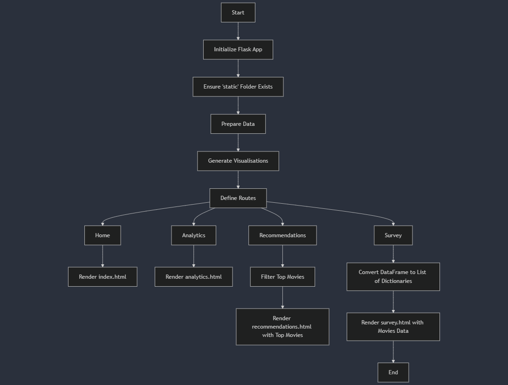

This project is a web app that helps users explore the top 1000 movies from IMDb. It's built using Flask, a simple tool for creating websites. The goal is to let users look at movie data, get movie suggestions, and join surveys in a fun and easy way. Technologies Used Flask: Flask is the main tool used to build the app. It helps set up the pages, handle user requests, and display the data. Pandas: Pandas is a tool used to clean and organize the movie data from a CSV file. The prepare_data function makes sure the data is ready for analysis. Plotly: Plotly is used to make interactive graphs and charts from the movie data. These visualizations are saved and shown on the website. HTML/CSS: The websites design is made using HTML and CSS. These tools create the layout and style of the pages, making them look good on any device. JavaScript: JavaScript is used to make the website interactive. For example, it helps the survey page update the data when users interact with it. Application Design The app has a few important parts: Data Preparation: The prepare_data function organizes the movie data by cleaning up missing information, and changing data types. Visualization Generation: The generate_visualisations_plotly function creates charts and graphs based on the data, which are then displayed on the website. Routes and Templates: The app has different pages for different purposes: /: The home page that shows an introduction to the app. /analytics: A page that shows graphs and insights about the movie data. /recommendations: A page that shows the top 10 movies with ratings higher than 8.5. /survey: A page where users can take a survey about the movies. Static Files: All images, styles, and scripts are stored in the 'static' folder to make sure the website runs smoothly.
